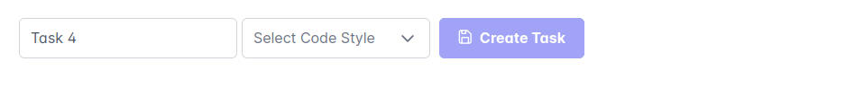
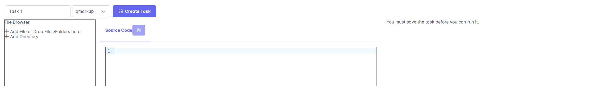
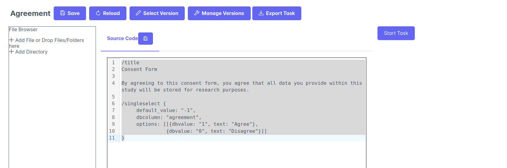

Quickstart : Task
This Guide shows you what to do to create a new task. The guide uses a very simplistic questionnaire containing a consent form. Examples of other Tasks can be found in the Task library ( add link once set up)
So let’s start
Initialize a new Task
To create a Task you go to Project Editing -> Tasks -> New, which will lead you to the following view
The first step in creating a task is to select a task name, the type of Task (e.g. SOILE Questionnaire language) and the version of the language (if applicable, e.g. for PsychoJS experiments).
For this tutorial, we will create a simple questionnaire. So lets select qmarkup, i.e. the SOILE questionnaire markup language in the code style dropdown.
This will open the Task editing view:
Let’s call our task “Agreement”, by entering it into the task name field. The name is important and had to be unique for each Task. That means no two tasks can have the same name. It is however possible to have multiple versions of a task (e.g. agreements specific for a given study).
Task Created
At this point the Task has not actually been created yet, as you haven’t clicked on the create Task Button. This is to avoid having an “empty” version of the task that is mostly meaningless.
Set up your First task
The SOILE platform does provide a few basic Tasks on setup as examples, but we will create a simple Questionnaire task that asks the participant to consent to their data being stored (NOTE: This is not a proper consent form. For actual studies, please work with your ethics and data protection support to create a proper consent form).
The main code file of your task is displayed in the center of the screen. Enter the following code there:
/title
Consent Form
By agreeing to this consent form, you agree that all data you provide within this study will be stored for research purposes.
/singleselect {
default_value: "-1",
dbcolumn: "agreement",
options: [[{dbvalue: "1", text: "Agree"},
{dbvalue: "0", text: "Disagree"}]]
}
Now click the Create Task button. You will be presented with a Dialog, asking to put in a version Name for this task. The versioning approach was mentioned in the Concepts about versioning section
Test your task
You should now have a screen that looks roughly like this:
You can test your task by clicking on the “Start Task” button, which will run your task and display it.
Modify your task
If you want to load a different version of your task for editing, you can do so by clicking on select Version. At the moment, only one version of our task exists, so there is not really anything to choose from.
Clicking on Reload, will remove all changes done to the task since you last saved it.
You can use the “Manage Versions” button to manage the visible versions of the Task. Removing a Tag makes this tag no longer selectable
To add files (e.g. images or other other code) to your You can use the File browser on the right.
Saving Tasks
Any changes you do to a task are only saved, once you click the “Save” button and provided a new version tag. Without providing a new version tag, any changes will be lost.